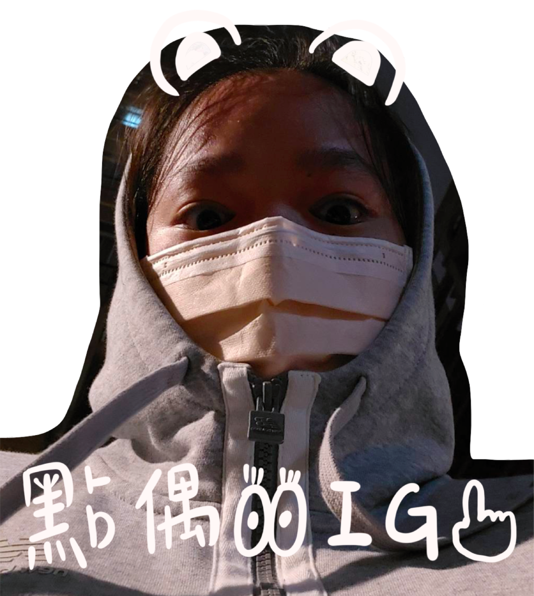
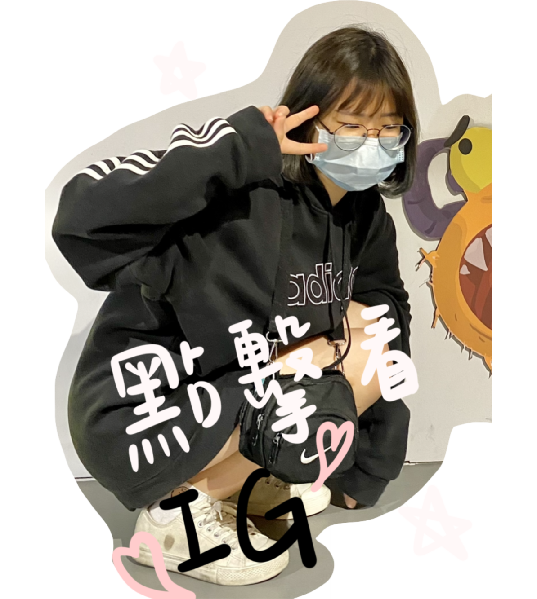
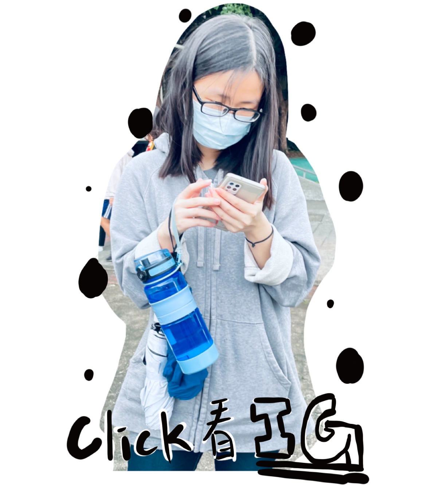

姓名：呂冠錚
工作內容：網站架設、影片主持人
心得：第一次製作一個完整的網頁，過去都是用網路上的模板加東西上去，都覺得很簡單，所以我也我以為只是照片隨便放上去，文字放旁邊，沒想到一做下去才知道排版好麻煩，因為根據不同人的螢幕大小，呈現出來的都不一樣，導致到最後再做統整時，部分東西還是需要做些更動，還有另個部分就是圖片與文字特效，就又是個更高深的東西了，為了讓網頁變漂亮，查了大大小小的東西，雖然某些特效看起來不起眼，但是其背後暗藏的程式碼，可難了！我覺得這次期中專案，讓我學到許多東西，我有許多不足之處，很感謝各個組員的包含，有各位的互助，才能讓期中報告得以順利完成，這是個珍貴的經驗，由衷感謝老師、助教以及組員們。
姓名：楊芷昀
工作內容：網站架設、腳本發想、影片拍攝
心得：剛開始想要做的特效跟希望呈現出來的結果有很大的落差，每天google分頁都要開100多頁，每個方法試了還不一定會成功，裡面有一個要用一個按鈕同時連動圖片跟連結，我受到非常大的挫折，最後寫出來的是我要的結果時已經過了三宿...排版的部分也很困難一開始因為用position top、left，所以到其他裝置時整個就跑版，所以就在最後幾天就一直改排版，這幾天看到其他的網頁都會開始看他們的排版，真個很佩服設計網頁的人！影片拍攝也很好玩，去體育館參觀新的裝潢，還有第一次進到游泳池，很謝謝有這次的專案讓我可以更認識體育館，也很謝謝組員們這幾個禮拜不眠不休地在寫網頁！

姓名：蔡翊甄
工作內容：網站架設、影片剪輯、美編
心得：與朋友一起從頭製作一個網頁的感覺很新奇，第一次製作網頁是用weebly，很多版面都會受到他的限制，這次則是從頭開始都由我們設計跟製作。一開始對於製作網頁總是有無限幻想，尤其看完學長姐做的就會覺得很嚮往，但實際去做的時候，才發現那些網頁的背後需要付出很多努力，大到排版小到文字要放到哪裡都需要一再的調整，慢慢的發現網頁設計是一個很廣闊的知識，自己學會的不過是皮毛而已，真的很謝謝所有組員，大家一起一點一滴完成了我們的創作！
姓名：曾順莉
工作內容：網站架設、Github管理
心得：這次的期中專題真的讓我學到了好多好多，在最初設計網站的時候想的越天花亂墜，執行的時候就有多痛苦，所以最後有很多想法都沒辦法實現出來。在這次的製作過程中幾乎天天都在一直改程式碼，尤其是到後期的時候才發現版面問題很大，因為筆電的顯示是125%所以在設定位址時看都覺得正常，但後來使用桌機看才發現一點都不正常！然後我花了好多好多的時間去調整程式，減少了很多使用直接定點的方始，或是使用百分比下去放置，這次的專題讓我知道了架設一個完整的網站有多麼辛苦，並且要一直學習新的東西，才能讓網站架設的更好。
